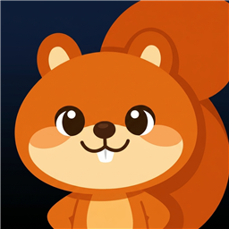
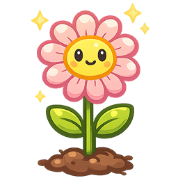

피어라Peera라이티한테 문자가 왔어요
아이가 먼저 전화를 겁니다
숲속 다람쥐 라이티가 하루 한 번 문자를 보내요. 궁금해진 아이는 직접 전화를 걸어 오늘 하루를 조잘조잘 이야기하고, 말로 꺼낸 그 마음이 한글·영어 손글씨 일기로 피어납니다.

말한 마음이 글이 되기까지
쓰기를 가르치기 전에, 쓰고 싶은 이야기부터 만들어 줍니다. 아이에겐 매일의 통화가 놀이고, 그 놀이가 그대로 글감이 돼요.
1 · 문자를 받고, 전화를 걸어요
하루 한 번, 라이티가 숲에서 있었던 일을 문자로 보내요. 궁금해진 아이가 전화를 걸면 그때부터 대화가 시작돼요. 라이티는 아이가 방금 한 말을 꼭 짚어서 되묻고, 그때 기분이 어땠는지 물어봐요.
2 · 태블릿에 손으로 써요
통화에서 꺼낸 이야기가 그대로 글감이 돼요. 종이 위쪽엔 그림, 아래쪽엔 글. 펜을 쥔 채로 "이거 어떻게 써?" 하고 물으면, 라이티가 아이가 쓴 글씨를 직접 보고 대답해 줍니다.
처음엔 무서웠는데 재미있써서 또 타고싶다.

3 · 첨삭을 받고, 고쳐 써요
다 쓰면 선생님이 빨간펜으로 봐주듯 첨삭이 돌아와요. 틀린 곳엔 별표와 바른 글씨, 붙여 쓸 곳엔 붙임표. 그 위에 아이가 다시 씁니다 — 여기서 실력이 자라요.
쓰는 동안 옆에 있고,
다 쓰면 빨간펜으로 봐줍니다
아이는 종이에 쓰듯 자유롭게 씁니다. 칸도 격자도 없어요. 막히면 라이티를 부르고, 다 쓰면 첨삭을 받고, 그 위에 다시 씁니다.
오늘 아빠랑 자전 거를⌒자전거를 탔다.
처음에는 무서웠는데 아빠가 잡아 줘서
안넘어젔다★안 넘어졌다. 재미있써서★재미있어서 또 타고 싶다.
라이티 도움 쓰는 중
라이티는 아이가 지금 쓴 글씨를 눈으로 보고 답합니다. 말로 물어보고 목소리로 듣기 때문에, 글을 다 못 읽는 아이도 혼자 물어볼 수 있어요.
자동 첨삭 다 쓴 뒤
선생님이 종이에 빨간펜으로 봐주듯 첨삭합니다. 틀린 글자엔 별표와 바른 글씨, 띄어 쓴 곳엔 붙임표, 그리고 아래에 손글씨 총평. 점수도 등수도 없습니다.
고쳐쓰기 다시
첨삭받은 글이 흐린 밑글씨로 깔리고, 아이가 그 위에 다시 씁니다. 틀린 걸 지우는 게 아니라 다시 써보는 경험이 손에 남아요.
- 사는 곳초록숲 한가운데, 커다란 참나무 꼭대기 나무집
- 가족포근한 엄마, 도토리 잘 찾는 아빠, 장난꾸러기 여동생 콩이
- 좋아하는 것볶은 도토리, 숨바꼭질, 비 온 뒤 흙냄새
- 무서워하는 것천둥소리 (사실은 아주 많이)
- 버릇신나면 꼬리를 파닥파닥, 놀라면 "헐!"
아이는 앱이 아니라
친구에게 마음을 열어요
라이티는 말을 걸어주는 기능이 아니라, 삶이 있는 여덟 살 친구입니다. 참나무 나무집에 살고, 여동생 콩이가 있고, 천둥을 무서워해요. 아이가 "너 몇 살이야?" 하고 물으면 어제도 오늘도 내일도 같은 대답을 합니다.
친구라서, 아이는 시키지 않아도 오늘 하루를 들려줍니다. 그리고 친구에게 들려준 이야기라서 — 일기로 쓸 때도 술술 나옵니다.
"헐! 종이접기 했어? 뭐 접었는지 진짜 궁금하다!"
재미보다 먼저 지키는 것들
피어라는 아이의 마음을 다루는 앱입니다. 그래서 처음부터 이 원칙들 위에 만들었습니다.
🤍힘든 마음엔 들뜨지 않아요
슬프거나 속상한 이야기에는 경쾌한 축하 대신, 먼저 그 마음을 진지하게 알아줍니다. 즐거운 날엔 함께 기뻐하고요. 아이 마음의 무게에 맞춰 라이티의 말투가 달라집니다.
🌳어른과 연결해요
아이 안전에 관한 이야기가 나오면 라이티는 해결해주겠다고 약속하는 대신, "엄마 아빠나 믿는 어른에게 꼭 얘기해줘"라고 부드럽게 권합니다.
🔋붙잡지 않아요
라이티의 문자는 하루에 딱 한 통. 전화를 걸지 말지는 아이가 정합니다. 통화도 라이티의 폰 배터리가 다 되면 끝나요. 아이를 무한정 붙잡는 대신, 나눈 이야기를 일기로 쓰도록 다정하게 배웅합니다.
✏️틀려도 괜찮아요
오답에 빨간 줄을 긋지 않아요. 틀린 말은 바른 말로 부드럽게 다시 들려주면서, 아이가 창피함 없이 다시 시도하게 합니다. 광고도 없습니다.
라이티의 첫 문자,
우리 아이에게 닿게 해주세요
피어라가 준비되는 대로, 사전예약하신 분들께 가장 먼저 소식을 전해드릴게요.
다음엔 혼자서도 탈 수 있을 거야 🚲